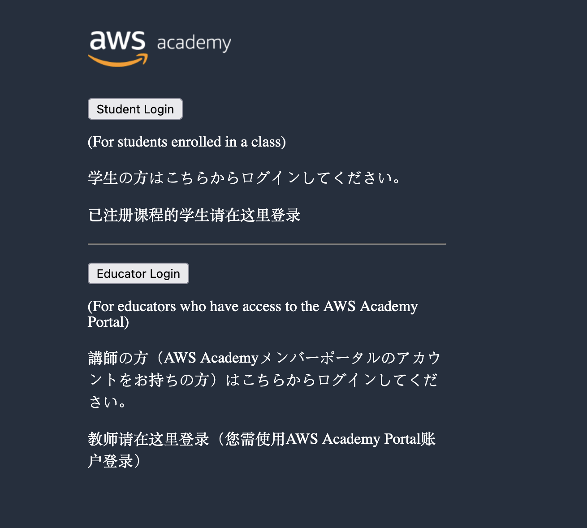

Pràctiques
IMPORTANT
Aquestes pràctiques no són obligatòries, però sí recomanables per a poder realitzar els entregables (Aules).
Pràctica 1 - Primer contacte amb AWS ☁️
IMPORTANT
Aquesta pràctica no podràs fer-la fins que el professor no et done d'alta a AWS Academy.
Primer accés a l’entorn de laboratori Accés a l’entorn d’AWS Academy (AWS Educate). Primer inici de sessió a la consola. Exploració inicial de la interfície: menú de serveis, barra de cerca, regions. Identificació dels serveis més visibles (EC2, S3, IAM, RDS, Lambda).
üîê 1. Acc√©s al portal d‚ÄôAWS Academy
Objectiu:
Entendre com accedir al curs i iniciar sessió en l'entorn virtual proporcionat per AWS Academy.
Instruccions detallades:
- Accedeix a üëâ https://awsacademy.instructure.com
-
Inicia sessió seleccionant Student Login amb el teu usuari i contrasenya (el/la professor/a facilitarà les credencials o l’enllaç d’inscripció).
 -
La pàgina principal és el Dashboard de AWS. Ací, podràs vore tots els cursos que tens disponible per a realitzar. Per començar, deuries vore el curs AWS Academy Cloud Foundations.
- Accedeix a la secció Modules (Mòduls).
- En el primer mòdul, busca el primer laboratori (pot tindre un nom com ara:
Getting Started with AWS,Introduction to AWS Console, o similar). - Fes clic al botó
Start Lab.
üí° Bloc informatiu
Quan faces clic aStart Lab, s’obrirà una finestra amb un dashboard del laboratori.
En aquest dashboard apareixeran les credencials temporals per accedir a AWS:
- L’enllaç a la consola de AWS
- Un nom d’usuari temporal
- Una contrasenya temporal
⚠️ No cal crear un compte d’AWS ni utilitzar el teu correu personal.
üì∑ Imatge suggerida:
Captura del dashboard del laboratori, on es veuen les credencials temporals.
üß≠ 2. Navegaci√≥ inicial per la consola d‚ÄôAWS
Objectiu:
Familiaritzar-se amb la interfície de la consola d’AWS i entendre la jerarquia de serveis.
Instruccions detallades:
- Obri la Consola d’AWS utilitzant les credencials temporals que t’ha proporcionat el laboratori.
- Observa els elements principals de la interfície:
- ✅ La barra superior (servicis recents, botó d'ajuda, usuari actual)
- ✅ El selector de regió (per defecte, sol estar a
N. Virginia) -
✅ El panell de serveis (botó
Servicesen la part superior esquerra) -
Fes clic al menú
Servicesi explora breument aquestes seccions: - Compute → on trobaràs el servei
EC2 - Storage → on apareix el servei
S3 - Security, Identity & Compliance → on trobaràs
IAM
üéØ Repte
Troba el servei EC2, fes clic i identifica les opcions del panell esquerre (Instances, Volumes, Key pairs...).
Fes el mateix amb S3 i IAM. Anota quines opcions apareixen en cadascun.
üì∑ Imatge suggerida:
Captura de pantalla de la consola principal d’AWS destacant:
- El selector de regió
- El botó Services
- La barra superior amb l’usuari i l’ajuda
üß≠ 3. Canvi d‚Äôidioma i configuraci√≥ de la interf√≠cie (opcional)
Objectiu:
Fer més accessible la consola d’AWS canviant l’idioma i revisant les opcions bàsiques de configuració.
Instruccions detallades:
- A la barra superior, fes clic sobre el teu nom d’usuari (dreta de tot).
- Selecciona
Settings. - Busca l’opció
Languagei selecciona Español o Català si està disponible (depenent de la versió de la consola). - Guarda els canvis.
ℹ️ Nota: El canvi d’idioma no afecta les funcionalitats, només l’idioma de la interfície.
✅ Entrega (si cal)
Quan hages completat totes les passes anteriors:
- Fes una captura de pantalla de la consola d’AWS on es veja:
- El teu nom d’usuari temporal
- La regió activa
- El panell de serveis
- Guarda la imatge com a PDF o inclou-la en un document que entregaràs per l’aula virtual segons les indicacions del professorat.